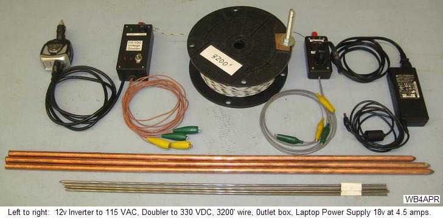
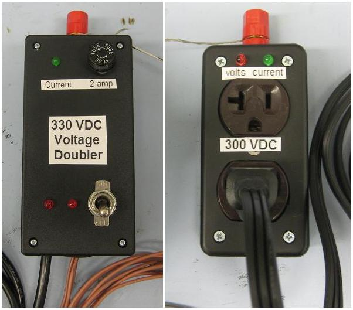
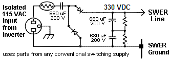
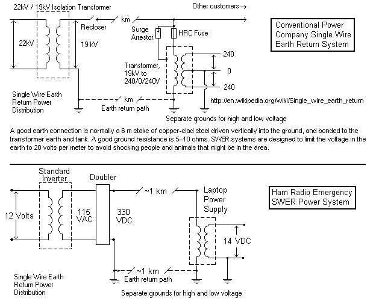
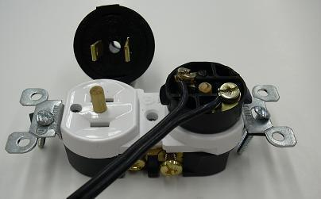

Long Distance Emergency Power Distribution
Long Distance Emergency Power Distribution
Long Distance Emergency Power Distribution
Long Distance Emergency Power Distribution

DISCLAIMER: This web page is for concept only. Lethal voltages can be involved and this system involves power distribution normally performed only by licensed electricians. It should not be used where Earth Return is prohibited by local codes. Do not use without assuming full responsibility for all risks.
Safe use: On the other hand the method described on this page has evolved over the years (at lower voltage) to include a safe method for using solar panels at camp over hundreds of feet at lower safe voltages.
PETA Clause: No earthworms were harmed in this experiment ;-)
SWER BACKGROUND: To extend emergency power from the Prius Power system, a Single Wire Earth Return(SWER) system is used. My small 6 inch spool of #22 wire can extend the Prius power over 3200 feet or more depending on the length of wire available. Conventional power systems use the SWER technique to deliver hundreds of KW over tens to hundreds of kilometers. Even though copper wire is used, the resistance of the wire over longer distances becomes the dominant factor not the ground resistance that approaches a constant. My 3200 feet of #22 wire has about 50 ohms resistance whereas the ground resistance can be as low as 10 ohms (though closer to 50-100 ohms when my short ground rods are used).
200 Watt example: Operating at 330 VDC (120 VAC from the inverter to a doubler circuit) cuts the current by three and therefore current loss by ten. With ground resistance as low as 10 to 100 ohms no-matter-the-distance, its only the wire loss (and soil type) that dominates. With 3000' of #22 (50 ohms) and a ground resistance of 50 ohms (100 total) operating at 2 amps leaves 100 volts at the far end. That's 200 W for a laptop and 100 W station using universal input (100-240 V) power supplies. Use the far-end P.S. to maintain charge on a small 12v battery to meet several hundred watt surge currents.
POWER SOURCE: Actually this system can be used on any vehicle since the actual power source is the 12 volt battery as shown above. We use the 12 volt source since it is easily converted to an isolated high voltage using any innexpensive 115 VAC inverter. Any power source can be used as long as it can be isolated from all other systems and have its own independent ground.

PRIUS CONTINUOUS POWER: The Prius is unique as a power generator in that
it can be left in READY mode with the engine
off and yet it can provide up to 100 amps of 12 volt power continuously
for hours (until the gas tank runs dry). The Prius engine will automatically
start itself to replenish the main High Voltage battery as needed, and shut down
when charged. An internal water cooled converter provides up to 100 amps
from the HV battery to the 12V battery and systems. This 12 volt system then
can provide continuous power to the distant load via the APRS SWER
system. Although the static load of
the Prius just sitting in READY mode is about 200 watts, even if no power is being used,
in my case,
my 200 watts of roof-top solar panels balance this to practically nothing when the
sun is shining. See my Prius-power-to-go
project.
Although the Prius already has a 220v system ideal for the SWER distribution, it cannot be used directly since the Prius keeps its High Voltage System isolated from the vehicle and from ground. The Prius system will generate a critical non-driveable system fault if it detects even a few meghom path to ground. In addition, the HV circuits are intentionally difficult to get to and dangerous to the casual hacker.
See SWER Experimental Test Results
See original Prius Emergency Power System

 SWER POWER SOURCE: To isolate the SWER voltages and currents from the Prius, (or other 12v vehicle system) we use a conventional 12 volt to 115 VAC inverter as shown above. It only has to be sized large enough to be about double the power capacity of the distant switching power supply used at the load end. To power a 50 Watt laptop power system (12 volts at 4 amps) only a 100 watt inverter is needed. The inverter power can be fed to the Single Wire line directly but its power losses are highly dependent on wire and ground resistance. By adding a voltage doubler box (a pair of diodes and capacitors), the SWER current is dropped in half which reduces the loss by a factor of 4 and also has the benefit of DC power distribution which is more efficient than AC. A terminal box at the other end provides an easy connection to any plug-in switching power supply as shown to the right. Red LED's indicate voltage present and green LED's indicate current is flowing. A fuse protects the sending end against shorts. (see full size).
 VOLTAGE DOUBLER CIRCUIT: The simple voltage doubler circuit is shown to the right. For a SWER system, we need one rail at ground and the other at +330 VDC so a conventional voltage doubler found on the input of most 115/230 V supplies cannot be used. These supplies put half the voltage above common and half below common so that less expensive 200 V capacitors can be used. My modified more conventional circuit achieves this with three 200v capacitors (two in series) as shown. These high voltage diodes and capacitors can be salvaged from old switching PC power supplies. See actual schematic

GROUND RODS: Conventional SWER Power systems deliver hundreds of Kw using grounds
as simple as 30 foot single rods or more as needed. A 10 ohm ground
resistance is ideal. Halving the depth of a rod increases the resistance
by probably a factor of 2.5. Doubling the number of rods reduces the
resistance by a factor of 2 as long as they are as far apart as deep.
Our small system goal is about 50-100 Ohms so we can go with a single 8 foot
rod or two 4 foot rods, or four 2 foot rods. I prefer the shorter rods
because they are easy to remove.
SAFETY: SWER systems preserve safety via isolation and grounding as shown in the figures below. The top image is a conventional SWER system. In the bottom image, our system preserves all the same isolation and grounding as in the standard power systems. In addition to the current carrying SWER grounds, safety is assured by a separate vehicle chassis to-ground rod to make sure that no stray voltages appear on the vehicle. At the load end, after conversion to equipment voltages, an independent chassis ground is also used to prevent any stray voltages that might occur. The only safety issues in a portable system are associated with inadvertant contact with the 330Vdc single wire line. This is averted just like amateur radio operators do routinely with their high voltag wire antennas by suspending them high and out of reach.

LOAD END POWER CONVERSION: The simplicity of this system is due to the wide availability of universal voltage switching power supplies in consumer products. Almost all laptop power supplies will accept any voltage from 100 to 240 VAC. Their labels say 47 to 65 Hz because that is the specific Underwriters Labs test that they paid for, and there was no reason to validate the device for DC since no conventional DC power sources exist. However, the first circuit in all of these switching power supplies is a bridge rectifier, so DC works just as well as AC (those with a 115/230 switch must be in the 230 V position to bypass the 115 VAC 60 Hz voltage doubler). 330 VDC is the peak voltage of 240 VAC.
LAPTOP POWER SUPPLIES: The advantage of most Laptop power supplies is that they do not have the 115/230v switch and are designed to work continuously on any voltage in the wide 100-240 volt range for operator convenience. This also means that in our simple portable SWER system, with the source voltage of 330 volts, that we can lose as much as 230 volts in line loss down to 100 volts and the power supply can still provide its rated output current. Most of these supplies are 16 to 18 volts and require 2 to 6 series diodes as shown in the figure above to get down to a safe 14 volts for most amateur equipment or to maintain charge on a local peak-current-load-leveling battery.
OTHER SWITCHING POWER SUPPLIES: Any switching power supply that has
a 115/230 VAC switch uses a 60 Hz voltage doubling circuit to get to
the same high 330 VDC whether 115 or 230 VAC is used for the input.
As shown to the right, in the 115 V
position, the two diodes that are greyed out are not used and the remaining
two diodes and filter caps form a doubler with the voltage split
with one capacitor above common by 150 volts and the other below common by 150 volts
for a total of 330 VDC. This allows the use of less expensive 200v capacitors.
Operating these supplies on the SWER circuit will probably not give
full rated output current because of the significant voltage drop
in the line and ground which they do not expect. Further
testing of these supplies is needed.
LOCAL LOAD LEVELING BATTERY: An easy way to provide peak currents of 10 to 20 amps for transmitters is to have a small battery at the load end of the line. It can provide the peak currents for transmitter demand while re-charging with up to 4 amps during receive. With a 12 amp transmitter and 1 amp receiver, an average transmit duty cycle of 25% can be maintained continuously.

220 VDC POWER CONNECTORS: . For the remote end of the SWER system, we use the same low cost 220 VDC connectors as we have used for our (Prius power distribution). This allows us to use conventional extension cord distribution from the SWER ground connection site over to the end user site where the final switching/isolation and down conversion to end user voltage is done. The connector we came up with was a standard two-prong power plug but with two PREVENTION devices to prevent inadvertant plugging in of other devices. The connector is shown to the right:
A standard two-prong socket is used, but without the usual 3rd ground pin. . This blocks the use of any 3 wire 115 VAC power cord. ANd assures independent safety grounds for the end user. . In addition, a 3/16ths inch nylon protrusion is fixed to the center of this receptical inbetween the two prongs. . This blocks the use of any 2-wire 115 VAC devices not prior determined to be compatible. . These connectors cost under $2 each for both the plug and the receptical.

Lightweight Power Cords: . Because of the much lower current demand at 220 VDC, a #18 zip cord can easily carry plenty of power the final hundred feet or so to the end user. . . In the photo above, the spool contains about 120 feet of #18 zip cord which is good for up to 5 Amps.
220 VDC Switching Power Supplies: . A typical Ham radio switching power supply is shown below and has the input circuit shown earlier (above). If it does not have an external 115/230 VAC jumper, it may have an internal jumper. Remove it for straight 220 VDC operation.
 .
.

Any experimentation you do with your Prius or your Electronics is at YOUR OWN RISK!
(YOUR MILEAGE MAY VARY!)...
TEST RESULTS: During the 26 Jul 09 Appalachian Trail 2000 mile
event we used this swer technique.
There were many lessons learned. First, we assumed we could pull the
2500' of wire down the hill easier than up it, so we carried the spool to the
top and dried to pull the wire down. Even with a person in the middle, the
tension in the wire from all the drag was too great and the wire could snap.
So deploying it took almost 2 hours. Next time we will unspool as we go,
and also we cut the wire in half so that we have the flexibility to pull
sections of it, or to use only half of it for shorter runs.
Second, with the laptop switching power supply as the only remote end load,
we discovered an oscillation. Turns out that Laptops when first connected to power
will put a max load on the power supply for a second or so to determine the
capacity of the power supply. Then it will adjust operation and charging according
to what it learns. Of course, this peak load for a second causes a singnificant
voltage drop in the SWER system, which the laptop sees as a low-voltage and then
it re-boots. This cycling goes on forever. Our solution was to momentarily
parallel a battery (or in our case a solar panel) to swamp this transient, so that
the laptop would boot and then operate normally.
Bottom line: . Your ability to bring emergency power should not be limited to
huge bulky orange extension cords when it can be done over great distances using
smaller wire just like the power company does. Single Wire Earth Return systems are
common and safe as long as measures are taken to prevent inadvertant human contact
with the high voltage wire.
Stringing wire through trees safely is a very common amateur radio operator technique.
Bob Bruninga, WB4APR
These notes are only intended to share my results and for no other purpose!
{kind=link}
{kind=link}